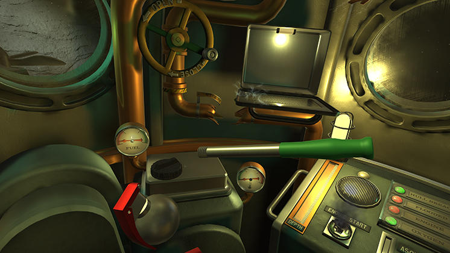
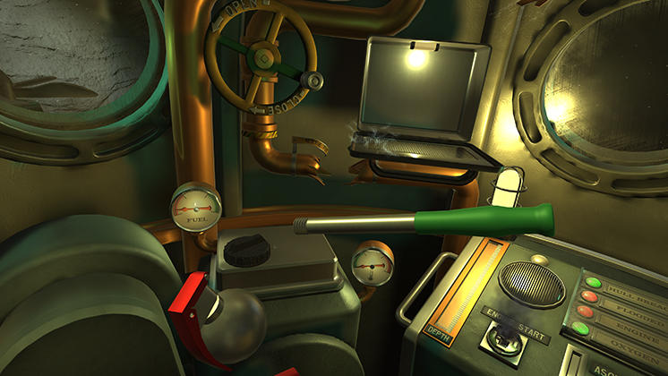

In the virtual reality game I Expect You to Die, players must solve puzzles in a variety of situations, such as getting out of an airplane in a car or surfacing an underwater escape pod. The majority of events have a time limit and demand rapid thinking to continue. The environment contains objects that appear to be randomly placed but actually serve a purpose that the player must discover in order to complete the puzzle and succeed.
Watch MeSynopsis: The plot revolves around a spy who works for "The Agency," a covert organization that safeguards the planet. The spy recently started their job and was given a telekinetic implant that gives them the ability to make items float. The spy's support agent reports that a high-tech car owned by wealthy super-villain Dr. Zor is set to fly to Zanzibar during the spy's first trip. The spy drives off the plane after turning on a protection mechanism in the vehicle. The spy discovers in their next mission that Zor has his lieutenant Daniel Sans working on a super-virus to exact revenge on The Agency. The spy enters the lab through a window while hiding. Then they construct a cure using a machine and a note from an eccentric scientist. When Zor unleashes the super-virus, it appears that it is too late to save the city, but the spy disassembles the nuclear weapon and blends the remedy. The spy's next job is to destroy Zor's submarine. Off-screen, they are successful, but the spy is trapped in a malfunctioning escape pod. The spy fixes the escape pod and alerts the Support Agent using quick thinking. The Support Agent informs the spy Zor has concealed "Machine Z" at his hunting lodge on their final assignment. Once there, the spy follows clues, avoids "deer gas" and "bear archers," and solves puzzles before realizing that Machine Z is a gravity machine run by gravity crystals. Additionally, they learn that Zor plans to launch Project Golden Goose, which would use a machine to destroy The Agency and profit Zor in the process. The spy manages to destroy the machine and escape via helicopter.
The Game: Your hands (and a few fingers) are represented by the Oculus Touch controllers in real-time, allowing you to do neat tricks. If you release one of the buttons on the controller, your index finger points forward, so you can "poke" things in the environment. (One room has radio stations that you can jump between.) The "blue line" telepathically pulls objects towards and away from you at will, allowing the designers to build areas larger than what's immediately around you.
But a fancy controller doesn't mean very much without meaningful interactions, and that's where I Expect You to Die's deployment of smart, funny puzzles inspired by old spy films come into play. In the second area, the game subtly hints that a slew of lasers are hidden in front of you, but there doesn't appear to be any way to find out where they are. Stranded on a platform thousands of feet in the air, you look for something that might function as a tool. The game doesn't tell you what objects are useful and what objects are window dressing, leaving it up to you to experiment.
Creation: CEO of Schell Games Jesse Schell stated in a blog post on Gamasutra that Senior Engineer Jason Pratt "collected together the best of the greatest VR demos that he could find, then embarked on some experiments of his own" in 2014. Hexius, "a universe that employed Jason's innovative VR mouse interface to determine where to teleport next," was made shortly after Schell Games Engineer Matt DeLucas "began riffing on Jason's work." The team members all experienced motion sickness as a result of his next transformation of teleportation mechanics into flight, which prompted discussion concerning the technology. I Expect You To Die was the working title that the team came up with after considering the concept of a player "having to escape through cunning puzzle solving." The former director of Enemy Mind, Mike Traficante, then organized a team at Schell Games to work on the game. Tim Rosko and Brandon Guillot contributed additional audio to Bonnie Bogovich's sound design.
Review by Game Developer Jesse Schell: At this point in time (June 2015), there is a lot of skepticism about VR in the game industry. Typical things game developers say about it include: The Virtual Boy already showed us that VR does not work. They tried VR in the nineties -- it did not work then, why would it work now? It will just be a fad -- like the Kinect, or 3DTV. Nobody is going to want to put a device on their face. The motion sickness problem is unsolvable. What is the point? There is nothing you can do in VR you cannot already do on a game console. My point of view is a bit different. I believe that after a massive flurry of VR hype in 2016, VR devices will be on the market indefinitely. They will not completely replace our existing game platforms, but instead they will join our gaming ecosystem, living and thriving alongside PC, console, and mobile gaming. The difference will be that VR gaming will be the most intense gaming experience, the mode of gaming that hardcore players will value most in the long run. There are a lot of objects that are interactable which make this game more fun and allow real time user interaction and thus is a good fit for VR.
Few problems to discuss:
1. Motion Sickness: This is caused in VR games and it very common.
A few ways to avoid motion sickness are:
a. Keep the framerate up: 60 - 90 fps
b. Avoid virtual camera movement
c. If you must move the camera, do not accelerate
d. And whatever you do, keep the horizon level
This Game is designed for players that are above the age of 12. Since, it contains Fantasy Violence, Alcohol Reference, and Use of Tobacco. Moreover, it can also cause motion sickness.
Here are a few positives and negatives of using VR with this game:
Negatives:
1. First person virtual motion.
2. Screen-relative HUD interfaces.
3. Variable frame-rate.
Positives:
1. Making you feel like you are really in a place.
2. Letting you touch and manipulate objects.
3. Face-to-face confrontations.
References:https://www.vice.com/en/article/wndzky/i-expect-you-to-die-is-one-of-virtual-realitys-best-games-yet
https://en.wikipedia.org/wiki/I_Expect_You_to_Die
https://www.gamedeveloper.com/design/making-great-vr-six-lessons-learned-from-i-expect-you-to-die
Image References: https://en.wikipedia.org/wiki/I_Expect_You_to_Die#/media/File:I_Expect_You_to_Die_-_Level_3_SS3.jpg
https://www.humblebundle.com/store/i-expect-you-to-die